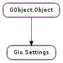

| static | list_relocatable_schemas() |
| static | list_schemas() |
| static | new(schema_id) |
| static | new_full(schema, backend, path) |
| static | new_with_backend(schema_id, backend) |
| static | new_with_backend_and_path(schema_id, backend, path) |
| static | new_with_path(schema_id, path) |
| static | sync() |
| static | unbind(object, property) |
| apply() | |
| bind(key, object, property, flags) | |
| bind_writable(key, object, property, inverted) | |
| create_action(key) | |
| delay() | |
| get_boolean(key) | |
| get_child(name) | |
| get_double(key) | |
| get_enum(key) | |
| get_flags(key) | |
| get_has_unapplied() | |
| get_int(key) | |
| get_mapped(key, mapping, *user_data) | |
| get_range(key) | |
| get_string(key) | |
| get_strv(key) | |
| get_uint(key) | |
| get_value(key) | |
| is_writable(name) | |
| keys() | |
| list_children() | |
| list_keys() | |
| range_check(key, value) | |
| reset(key) | |
| revert() | |
| set_boolean(key, value) | |
| set_double(key, value) | |
| set_enum(key, value) | |
| set_flags(key, value) | |
| set_int(key, value) | |
| set_string(key, value) | |
| set_strv(key, value) | |
| set_uint(key, value) | |
| set_value(key, value) |
| Name | Type | Flags | Description |
|---|---|---|---|
| delay-apply | bool | r | Whether this settings object is in ‘delay-apply’ mode |
| has-unapplied | bool | r | True if there are outstanding changes to apply() |
| path | str | r/w/c | The path within the backend where the settings are |
| schema | str | r/w/c | The name of the schema for this settings object |
| schema-id | str | r/w/c | The name of the schema for this settings object |
| settings-schema | Gio.SettingsSchema | r/w/c | The Gio.SettingsSchema for this settings object |
| Name | Parameters | Return | Description |
|---|---|---|---|
| change-event | int, int | bool | The “change-event” signal is emitted once per change event that affects this settings object. You should connect to this signal only if you are interested in viewing groups of changes before they are split out into multiple emissions of the “changed” signal. For most use cases it is more appropriate to use the “changed” signal. In the event that the change event applies to one or more specified keys, keys will be an array of GLib.Quark of length n_keys. In the event that the change event applies to the Gio.Settings object as a whole (ie: potentially every key has been changed) then keys will be None and n_keys will be 0. The default handler for this signal invokes the “changed” signal for each affected key. If any other connected handler returns True then this default functionality will be suppressed. |
| changed | str | The “changed” signal is emitted when a key has potentially changed. You should call one of the Gio.Settings.get () calls to check the new value. This signal supports detailed connections. You can connect to the detailed signal “changed::x” in order to only receive callbacks when key “x” changes. | |
| writable-change-event | int | bool | The “writable-change-event” signal is emitted once per writability change event that affects this settings object. You should connect to this signal if you are interested in viewing groups of changes before they are split out into multiple emissions of the “writable-changed” signal. For most use cases it is more appropriate to use the “writable-changed” signal. In the event that the writability change applies only to a single key, key will be set to the GLib.Quark for that key. In the event that the writability change affects the entire settings object, key will be 0. The default handler for this signal invokes the “writable-changed” and “changed” signals for each affected key. This is done because changes in writability might also imply changes in value (if for example, a new mandatory setting is introduced). If any other connected handler returns True then this default functionality will be suppressed. |
| writable-changed | str | The “writable-changed” signal is emitted when the writability of a key has potentially changed. You should call Gio.Settings.is_writable () in order to determine the new status. This signal supports detailed connections. You can connect to the detailed signal “writable-changed::x” in order to only receive callbacks when the writability of “x” changes. |
| Name | Type | Access |
|---|---|---|
| parent_instance | GObject.Object | r |
Bases: GObject.Object
The Gio.Settings class provides a convenient API for storing and retrieving application settings.
Reads and writes can be considered to be non-blocking. Reading settings with Gio.Settings is typically extremely fast: on approximately the same order of magnitude (but slower than) a GLib.HashTable lookup. Writing settings is also extremely fast in terms of time to return to your application, but can be extremely expensive for other threads and other processes. Many settings backends (including dconf) have lazy initialisation which means in the common case of the user using their computer without modifying any settings a lot of work can be avoided. For dconf, the D-Bus service doesn’t even need to be started in this case. For this reason, you should only ever modify Gio.Settings keys in response to explicit user action. Particular care should be paid to ensure that modifications are not made during startup – for example, when setting the initial value of preferences widgets. The built-in Gio.Settings.bind () functionality is careful not to write settings in response to notify signals as a result of modifications that it makes to widgets.
When creating a Gio.Settings instance, you have to specify a schema that describes the keys in your settings and their types and default values, as well as some other information.
Normally, a schema has as fixed path that determines where the settings are stored in the conceptual global tree of settings. However, schemas can also be ‘relocatable’, i.e. not equipped with a fixed path. This is useful e.g. when the schema describes an ‘account’, and you want to be able to store a arbitrary number of accounts.
Paths must start with and end with a forward slash character (‘/’) and must not contain two sequential slash characters. Paths should be chosen based on a domain name associated with the program or library to which the settings belong. Examples of paths are “/org/gtk/settings/file-chooser/” and “/ca/desrt/dconf-editor/”. Paths should not start with “/apps/”, “/desktop/” or “/system/” as they often did in GConf.
Unlike other configuration systems (like GConf), Gio.Settings does not restrict keys to basic types like strings and numbers. Gio.Settings stores values as GLib.Variant, and allows any GLib.VariantType for keys. Key names are restricted to lowercase characters, numbers and ‘-‘. Furthermore, the names must begin with a lowercase character, must not end with a ‘-‘, and must not contain consecutive dashes.
Similar to GConf, the default values in Gio.Settings schemas can be localized, but the localized values are stored in gettext catalogs and looked up with the domain that is specified in the gettext-domain attribute of the schemalist or schema elements and the category that is specified in the l10n attribute of the key element.
Gio.Settings uses schemas in a compact binary form that is created by the glib-compile-schemas utility. The input is a schema description in an XML format that can be described by the following DTD: <xi:include xmlns:xi="http://www.w3.org/2001/XInclude" parse="text" href="../../../../gio/gschema.dtd"><xi:fallback>FIXME: MISSING XINCLUDE CONTENT</xi:fallback></xi:include>
glib-compile-schemas expects schema files to have the extension .gschema.xml
At runtime, schemas are identified by their id (as specified in the id attribute of the schema element). The convention for schema ids is to use a dotted name, similar in style to a D-Bus bus name, e.g. “org.gnome.SessionManager”. In particular, if the settings are for a specific service that owns a D-Bus bus name, the D-Bus bus name and schema id should match. For schemas which deal with settings not associated with one named application, the id should not use StudlyCaps, e.g. “org.gnome.font-rendering”.
In addition to GLib.Variant types, keys can have types that have enumerated types. These can be described by a choice, enum or flags element, see . The underlying type of such a key is string, but you can use Gio.Settings.get_enum (), Gio.Settings.set_enum (), Gio.Settings.get_flags (), Gio.Settings.set_flags () access the numeric values corresponding to the string value of enum and flags keys.
Default values
<schemalist>
<schema id="org.gtk.Test" path="/org/gtk/Test/" gettext-domain="test">
<key name="greeting" type="s">
<default l10n="messages">"Hello, earthlings"</default>
<summary>A greeting</summary>
<description>
Greeting of the invading martians
</description>
</key>
<key name="box" type="(ii)">
<default>(20,30)</default>
</key>
</schema>
</schemalist>
Ranges, choices and enumerated types
<schemalist>
<enum id="org.gtk.Test.myenum">
<value nick="first" value="1" />
<value nick="second" value="2" />
</enum>
<flags id="org.gtk.Test.myflags">
<value nick="flag1" value="1" />
<value nick="flag2" value="2" />
<value nick="flag3" value="4" />
</flags>
<schema id="org.gtk.Test">
<key name="key-with-range" type="i">
<range min="1" max="100" />
<default>10</default>
</key>
<key name="key-with-choices" type="s">
<choices>
<choice value='Elisabeth' />
<choice value='Annabeth' />
<choice value='Joe' />
</choices>
<aliases>
<alias value='Anna' target='Annabeth' />
<alias value='Beth' target='Elisabeth' />
</aliases>
<default>'Joe'</default>
</key>
<key name='enumerated-key' enum='org.gtk.Test.myenum'>
<default>'first'</default>
</key>
<key name='flags-key' flags='org.gtk.Test.myflags'>
<default>["flag1",flag2"]</default>
</key>
</schema>
</schemalist>
Vendor overrides
Default values are defined in the schemas that get installed by an application. Sometimes, it is necessary for a vendor or distributor to adjust these defaults. Since patching the XML source for the schema is inconvenient and error-prone, glib-compile-schemas reads so-called ‘vendor override’ files. These are keyfiles in the same directory as the XML schema sources which can override default values. The schema id serves as the group name in the key file, and the values are expected in serialized GLib.Variant form, as in the following example:
[org.gtk.Example]
key1='string'
key2=1.5
glib-compile-schemas expects schema files to have the extension .gschema.override
Binding
A very convenient feature of Gio.Settings lets you bind GObject.Object properties directly to settings, using Gio.Settings.bind (). Once a GObject.Object property has been bound to a setting, changes on either side are automatically propagated to the other side. Gio.Settings handles details like mapping between GObject.Object and GLib.Variant types, and preventing infinite cycles.
This makes it very easy to hook up a preferences dialog to the underlying settings. To make this even more convenient, Gio.Settings looks for a boolean property with the name “sensitivity” and automatically binds it to the writability of the bound setting. If this ‘magic’ gets in the way, it can be suppressed with the Gio.SettingsBindFlags.NO_SENSITIVITY flag.
| Returns: | a list of relocatable Gio.Settings schemas that are available. The list must not be modified or freed. |
|---|---|
| Return type: | [str] |
Gets a list of the relocatable Gio.Settings schemas installed on the system. These are schemas that do not provide their own path. It is usual to instantiate these schemas directly, but if you want to you can use Gio.Settings.new_with_path () to specify the path.
The output of this function, taken together with the output of Gio.Settings.list_schemas () represents the complete list of all installed schemas.
| Returns: | a list of Gio.Settings schemas that are available. The list must not be modified or freed. |
|---|---|
| Return type: | [str] |
Gets a list of the Gio.Settings schemas installed on the system. The returned list is exactly the list of schemas for which you may call Gio.Settings.new () without adverse effects.
This function does not list the schemas that do not provide their own paths (ie: schemas for which you must use Gio.Settings.new_with_path ()). See Gio.Settings.list_relocatable_schemas () for that.
| Parameters: | schema_id (str) – the id of the schema |
|---|---|
| Returns: | a new Gio.Settings object |
| Return type: | Gio.Settings |
Creates a new Gio.Settings object with the schema specified by schema_id.
Signals on the newly created Gio.Settings object will be dispatched via the thread-default GLib.MainContext in effect at the time of the call to Gio.Settings.new (). The new Gio.Settings will hold a reference on the context. See GLib.MainContext.push_thread_default ().
| Parameters: |
|
|---|---|
| Returns: | a new Gio.Settings object |
| Return type: |
Creates a new Gio.Settings object with a given schema, backend and path.
It should be extremely rare that you ever want to use this function. It is made available for advanced use-cases (such as plugin systems that want to provide access to schemas loaded from custom locations, etc).
At the most basic level, a Gio.Settings object is a pure composition of 4 things: a Gio.SettingsSchema, a Gio.SettingsBackend, a path within that backend, and a GLib.MainContext to which signals are dispatched.
This constructor therefore gives you full control over constructing Gio.Settings instances. The first 4 parameters are given directly as schema, backend and path, and the main context is taken from the thread-default (as per Gio.Settings.new ()).
If backend is None then the default backend is used.
If path is None then the path from the schema is used. It is an error f path is None and the schema has no path of its own or if path is non-None and not equal to the path that the schema does have.
| Parameters: |
|
|---|---|
| Returns: | a new Gio.Settings object |
| Return type: |
Creates a new Gio.Settings object with the schema specified by schema_id and a given Gio.SettingsBackend.
Creating a Gio.Settings object with a different backend allows accessing settings from a database other than the usual one. For example, it may make sense to pass a backend corresponding to the “defaults” settings database on the system to get a settings object that modifies the system default settings instead of the settings for this user.
| Parameters: |
|
|---|---|
| Returns: | a new Gio.Settings object |
| Return type: |
Creates a new Gio.Settings object with the schema specified by schema_id and a given Gio.SettingsBackend and path.
This is a mix of Gio.Settings.new_with_backend () and Gio.Settings.new_with_path ().
| Parameters: | |
|---|---|
| Returns: | a new Gio.Settings object |
| Return type: |
Creates a new Gio.Settings object with the relocatable schema specified by schema_id and a given path.
You only need to do this if you want to directly create a settings object with a schema that doesn’t have a specified path of its own. That’s quite rare.
It is a programmer error to call this function for a schema that has an explicitly specified path.
Ensures that all pending operations for the given are complete for the default backend.
Writes made to a Gio.Settings are handled asynchronously. For this reason, it is very unlikely that the changes have it to disk by the time Gio.Settings.set () returns.
This call will block until all of the writes have made it to the backend. Since the mainloop is not running, no change notifications will be dispatched during this call (but some may be queued by the time the call is done).
| Parameters: |
|
|---|
Removes an existing binding for property on object.
Note that bindings are automatically removed when the object is finalized, so it is rarely necessary to call this function.
Applies any changes that have been made to the settings. This function does nothing unless settings is in ‘delay-apply’ mode; see Gio.Settings.delay (). In the normal case settings are always applied immediately.
| Parameters: |
|
|---|
Create a binding between the key in the settings object and the property property of object.
The binding uses the default GIO mapping functions to map between the settings and property values. These functions handle booleans, numeric types and string types in a straightforward way. Use Gio.Settings.bind_with_mapping () if you need a custom mapping, or map between types that are not supported by the default mapping functions.
Unless the flags include Gio.SettingsBindFlags.NO_SENSITIVITY, this function also establishes a binding between the writability of key and the “sensitive” property of object (if object has a boolean property by that name). See Gio.Settings.bind_writable () for more details about writable bindings.
Note that the lifecycle of the binding is tied to the object, and that you can have only one binding per object property. If you bind the same property twice on the same object, the second binding overrides the first one.
| Parameters: |
|
|---|
Create a binding between the writability of key in the settings object and the property property of object. The property must be boolean; “sensitive” or “visible” properties of widgets are the most likely candidates.
Writable bindings are always uni-directional; changes of the writability of the setting will be propagated to the object property, not the other way.
When the inverted argument is True, the binding inverts the value as it passes from the setting to the object, i.e. property will be set to True if the key is not writable.
Note that the lifecycle of the binding is tied to the object, and that you can have only one binding per object property. If you bind the same property twice on the same object, the second binding overrides the first one.
| Parameters: | key (str) – the name of a key in settings |
|---|---|
| Returns: | a new Gio.Action |
| Return type: | Gio.Action |
Creates a Gio.Action corresponding to a given Gio.Settings key.
The action has the same name as the key.
The value of the key becomes the state of the action and the action is enabled when the key is writable. Changing the state of the action results in the key being written to. Changes to the value or writability of the key cause appropriate change notifications to be emitted for the action.
For boolean-valued keys, action activations take no parameter and result in the toggling of the value. For all other types, activations take the new value for the key (which must have the correct type).
Changes the Gio.Settings object into ‘delay-apply’ mode. In this mode, changes to settings are not immediately propagated to the backend, but kept locally until Gio.Settings.apply () is called.
| Parameters: | key (str) – the key to get the value for |
|---|---|
| Returns: | a boolean |
| Return type: | bool |
Gets the value that is stored at key in settings.
A convenience variant of Gio.Settings.get () for booleans.
It is a programmer error to give a key that isn’t specified as having a boolean type in the schema for settings.
| Parameters: | name (str) – the name of the ‘child’ schema |
|---|---|
| Returns: | a ‘child’ settings object |
| Return type: | Gio.Settings |
Creates a ‘child’ settings object which has a base path of base-path/@name, where base-path is the base path of settings.
The schema for the child settings object must have been declared in the schema of settings using a child element.
| Parameters: | key (str) – the key to get the value for |
|---|---|
| Returns: | a double |
| Return type: | float |
Gets the value that is stored at key in settings.
A convenience variant of Gio.Settings.get () for doubles.
It is a programmer error to give a key that isn’t specified as having a ‘double’ type in the schema for settings.
| Parameters: | key (str) – the key to get the value for |
|---|---|
| Returns: | the enum value |
| Return type: | int |
Gets the value that is stored in settings for key and converts it to the enum value that it represents.
In order to use this function the type of the value must be a string and it must be marked in the schema file as an enumerated type.
It is a programmer error to give a key that isn’t contained in the schema for settings or is not marked as an enumerated type.
If the value stored in the configuration database is not a valid value for the enumerated type then this function will return the default value.
| Parameters: | key (str) – the key to get the value for |
|---|---|
| Returns: | the flags value |
| Return type: | int |
Gets the value that is stored in settings for key and converts it to the flags value that it represents.
In order to use this function the type of the value must be an array of strings and it must be marked in the schema file as an flags type.
It is a programmer error to give a key that isn’t contained in the schema for settings or is not marked as a flags type.
If the value stored in the configuration database is not a valid value for the flags type then this function will return the default value.
| Returns: | True if settings has unapplied changes |
|---|---|
| Return type: | bool |
Returns whether the Gio.Settings object has any unapplied changes. This can only be the case if it is in ‘delayed-apply’ mode.
| Parameters: | key (str) – the key to get the value for |
|---|---|
| Returns: | an integer |
| Return type: | int |
Gets the value that is stored at key in settings.
A convenience variant of Gio.Settings.get () for 32-bit integers.
It is a programmer error to give a key that isn’t specified as having a int32 type in the schema for settings.
| Parameters: |
|
|---|---|
| Returns: | the result, which may be None |
| Return type: |
Gets the value that is stored at key in settings, subject to application-level validation/mapping.
You should use this function when the application needs to perform some processing on the value of the key (for example, parsing). The mapping function performs that processing. If the function indicates that the processing was unsuccessful (due to a parse error, for example) then the mapping is tried again with another value.
This allows a robust ‘fall back to defaults’ behaviour to be implemented somewhat automatically.
The first value that is tried is the user’s setting for the key. If the mapping function fails to map this value, other values may be tried in an unspecified order (system or site defaults, translated schema default values, untranslated schema default values, etc).
If the mapping function fails for all possible values, one additional attempt is made: the mapping function is called with a None value. If the mapping function still indicates failure at this point then the application will be aborted.
The result parameter for the mapping function is pointed to a object which is initially set to None. The same pointer is given to each invocation of mapping. The final value of that object is what is returned by this function. None is valid; it is returned just as any other value would be.
| Parameters: | key (str) – the key to query the range of |
|---|---|
| Returns: | a GLib.Variant describing the range |
| Return type: | GLib.Variant |
Queries the range of a key.
This function will return a GLib.Variant that fully describes the range of values that are valid for key.
The type of GLib.Variant returned is (sv). The string describes the type of range restriction in effect. The type and meaning of the value contained in the variant depends on the string.
If the string is 'type' then the variant contains an empty array. The element type of that empty array is the expected type of value and all values of that type are valid.
If the string is 'enum' then the variant contains an array enumerating the possible values. Each item in the array is a possible valid value and no other values are valid.
If the string is 'flags' then the variant contains an array. Each item in the array is a value that may appear zero or one times in an array to be used as the value for this key. For example, if the variant contained the array ['x', 'y'] then the valid values for the key would be [], ['x'], ['y'], ['x', 'y'] and ['y', 'x'].
Finally, if the string is 'range' then the variant contains a pair of like-typed values – the minimum and maximum permissible values for this key.
This information should not be used by normal programs. It is considered to be a hint for introspection purposes. Normal programs should already know what is permitted by their own schema. The format may change in any way in the future – but particularly, new forms may be added to the possibilities described above.
It is a programmer error to give a key that isn’t contained in the schema for settings.
You should free the returned value with GLib.Variant.unref () when it is no longer needed.
| Parameters: | key (str) – the key to get the value for |
|---|---|
| Returns: | a newly-allocated string |
| Return type: | str |
Gets the value that is stored at key in settings.
A convenience variant of Gio.Settings.get () for strings.
It is a programmer error to give a key that isn’t specified as having a string type in the schema for settings.
| Parameters: | key (str) – the key to get the value for |
|---|---|
| Returns: | a newly-allocated, None-terminated array of strings, the value that is stored at key in settings. |
| Return type: | [str] |
A convenience variant of Gio.Settings.get () for string arrays.
It is a programmer error to give a key that isn’t specified as having an array of strings type in the schema for settings.
| Parameters: | key (str) – the key to get the value for |
|---|---|
| Returns: | an unsigned integer |
| Return type: | int |
Gets the value that is stored at key in settings.
A convenience variant of Gio.Settings.get () for 32-bit unsigned integers.
It is a programmer error to give a key that isn’t specified as having a uint32 type in the schema for settings.
| Parameters: | key (str) – the key to get the value for |
|---|---|
| Returns: | a new GLib.Variant |
| Return type: | GLib.Variant |
Gets the value that is stored in settings for key.
It is a programmer error to give a key that isn’t contained in the schema for settings.
| Parameters: | name (str) – the name of a key |
|---|---|
| Returns: | True if the key name is writable |
| Return type: | bool |
Finds out if a key can be written or not
| Returns: | a list of the children on settings |
|---|---|
| Return type: | [str] |
Gets the list of children on settings.
The list is exactly the list of strings for which it is not an error to call Gio.Settings.get_child ().
For Gio.Settings objects that are lists, this value can change at any time and you should connect to the “children-changed” signal to watch for those changes. Note that there is a race condition here: you may request a child after listing it only for it to have been destroyed in the meantime. For this reason, Gio.Settings.get_child () may return None even for a child that was listed by this function.
For Gio.Settings objects that are not lists, you should probably not be calling this function from “normal” code (since you should already know what children are in your schema). This function may still be useful there for introspection reasons, however.
You should free the return value with GLib.strfreev () when you are done with it.
| Returns: | a list of the keys on settings |
|---|---|
| Return type: | [str] |
Introspects the list of keys on settings.
You should probably not be calling this function from “normal” code (since you should already know what keys are in your schema). This function is intended for introspection reasons.
You should free the return value with GLib.strfreev () when you are done with it.
| Parameters: |
|
|---|---|
| Returns: | True if value is valid for key |
| Return type: |
Checks if the given value is of the correct type and within the permitted range for key.
This API is not intended to be used by normal programs – they should already know what is permitted by their own schemas. This API is meant to be used by programs such as editors or commandline tools.
It is a programmer error to give a key that isn’t contained in the schema for settings.
| Parameters: | key (str) – the name of a key |
|---|
Resets key to its default value.
This call resets the key, as much as possible, to its default value. That might the value specified in the schema or the one set by the administrator.
Reverts all non-applied changes to the settings. This function does nothing unless settings is in ‘delay-apply’ mode; see Gio.Settings.delay (). In the normal case settings are always applied immediately.
Change notifications will be emitted for affected keys.
| Parameters: | |
|---|---|
| Returns: | True if setting the key succeeded, False if the key was not writable |
| Return type: |
Sets key in settings to value.
A convenience variant of Gio.Settings.set () for booleans.
It is a programmer error to give a key that isn’t specified as having a boolean type in the schema for settings.
| Parameters: |
|
|---|---|
| Returns: | True if setting the key succeeded, False if the key was not writable |
| Return type: |
Sets key in settings to value.
A convenience variant of Gio.Settings.set () for doubles.
It is a programmer error to give a key that isn’t specified as having a ‘double’ type in the schema for settings.
| Parameters: | |
|---|---|
| Returns: | True, if the set succeeds |
| Return type: |
Looks up the enumerated type nick for value and writes it to key, within settings.
It is a programmer error to give a key that isn’t contained in the schema for settings or is not marked as an enumerated type, or for value not to be a valid value for the named type.
After performing the write, accessing key directly with Gio.Settings.get_string () will return the ‘nick’ associated with value.
| Parameters: | |
|---|---|
| Returns: | True, if the set succeeds |
| Return type: |
Looks up the flags type nicks for the bits specified by value, puts them in an array of strings and writes the array to key, within settings.
It is a programmer error to give a key that isn’t contained in the schema for settings or is not marked as a flags type, or for value to contain any bits that are not value for the named type.
After performing the write, accessing key directly with Gio.Settings.get_strv () will return an array of ‘nicks’; one for each bit in value.
| Parameters: | |
|---|---|
| Returns: | True if setting the key succeeded, False if the key was not writable |
| Return type: |
Sets key in settings to value.
A convenience variant of Gio.Settings.set () for 32-bit integers.
It is a programmer error to give a key that isn’t specified as having a int32 type in the schema for settings.
| Parameters: | |
|---|---|
| Returns: | True if setting the key succeeded, False if the key was not writable |
| Return type: |
Sets key in settings to value.
A convenience variant of Gio.Settings.set () for strings.
It is a programmer error to give a key that isn’t specified as having a string type in the schema for settings.
| Parameters: | |
|---|---|
| Returns: | True if setting the key succeeded, False if the key was not writable |
| Return type: |
Sets key in settings to value.
A convenience variant of Gio.Settings.set () for string arrays. If value is None, then key is set to be the empty array.
It is a programmer error to give a key that isn’t specified as having an array of strings type in the schema for settings.
| Parameters: | |
|---|---|
| Returns: | True if setting the key succeeded, False if the key was not writable |
| Return type: |
Sets key in settings to value.
A convenience variant of Gio.Settings.set () for 32-bit unsigned integers.
It is a programmer error to give a key that isn’t specified as having a uint32 type in the schema for settings.
| Parameters: |
|
|---|---|
| Returns: | True if setting the key succeeded, False if the key was not writable |
| Return type: |
Sets key in settings to value.
It is a programmer error to give a key that isn’t contained in the schema for settings or for value to have the incorrect type, per the schema.
If value is floating then this function consumes the reference.